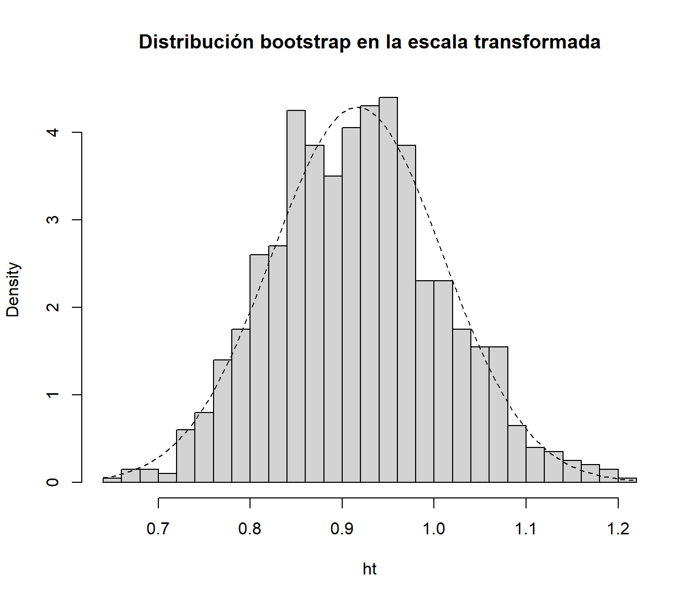

4.6 Ejemplos
4.6.1 IC bootstrap para la media mediante el método percentil-t simetrizado
Continuando con el ejemplo de los tiempos de vida de microorganismos (sin asumir varianza conocida), para obtener una estimación por intervalo de confianza de su vida media empleando el método bootstrap percentil-t simetrizado se podría utilizar (ver Ejemplo 1.5):
muestra <- c(0.143, 0.182, 0.256, 0.26, 0.27, 0.437, 0.509,
0.611, 0.712, 1.04, 1.09, 1.15, 1.46, 1.88, 2.08)
n <- length(muestra)
alfa <- 0.05
x_barra <- mean(muestra)
cuasi_dt <- sd(muestra)
# Remuestreo
set.seed(1)
B <- 1000
remuestra <- numeric(n)
estadistico_boot <- numeric(B)
for (k in 1:B) {
remuestra <- sample(muestra, n, replace = TRUE)
x_barra_boot <- mean(remuestra)
cuasi_dt_boot <- sd(remuestra)
estadistico_boot[k] <- sqrt(n) * abs(x_barra_boot - x_barra)/cuasi_dt_boot
}
# Aproximación bootstrap del pto crítico
pto_crit <- quantile(estadistico_boot, 1 - alfa)
# Construcción del IC
ic_inf_boot <- x_barra - pto_crit * cuasi_dt/sqrt(n)
ic_sup_boot <- x_barra + pto_crit * cuasi_dt/sqrt(n)
IC_boot <- c(ic_inf_boot, ic_sup_boot)
names(IC_boot) <- paste0(100*c(alfa/2, 1-alfa/2), "%")
IC_boot## 2.5% 97.5%
## 0.4334742 1.17719244.6.2 Estudio de simulación
El siguiente código permite realizar estudios de simulación comparando las probabilidades de cobertura y las longitudes de los intervalos de confianza clásicos (basados en normalidad), bootstrap percentil, bootstrap percentil-\(t\) y bootstrap percentil-\(t\) simetrizado para la media, en el caso de muestras procedentes de una distribución \(\exp \left( \lambda \right)\). En este caso se obtienen las estimaciones Monte Carlo a partir de 500 simulaciones con \(\lambda = 0.01\), tamaño muestral \(n=100\) y \(B=1000\) réplicas bootstrap para un nivel de confianza nominal del 90% (\(\alpha =0.10\)).
t.ini <- proc.time()
rate <- 0.01
mu <- 1/rate
n <- 100
alfa <- 0.1
namesI <- paste0(100*c(alfa/2, 1-alfa/2), "%")
B <- 1000
percentil <- numeric(B)
percentilt <- numeric(B)
percentilts <- numeric(B)
nsim <- 500
resultados <- array(dim = c(nsim, 2, 4))
dimnames(resultados) <- list(NULL, c("Cobertura", "Longitud"),
c("Normal", "Percentil", "Percentil-t", "Percentil-t simetrizado"))
# Bucle simulación
set.seed(1)
for (isim in 1:nsim) {
# Aproximación clásica
muestra <- rexp(n, rate = 0.01)
media <- mean(muestra)
desv <- sd(muestra)
z <- qnorm(1 - alfa/2)
ic_inf <- media - z*desv/sqrt(n)
ic_sup <- media + z*desv/sqrt(n)
I0 <- c(ic_inf, ic_sup)
# names(I0) <- namesI
resultados[isim, 1, 1] <- (I0[1] < mu) && (mu < I0[2])
resultados[isim, 2, 1] <- I0[2] - I0[1]
# Remuestreo bootstrap
for (k in 1:B) {
remuestra <- sample(muestra, n, replace = TRUE)
percentil[k] <- sqrt(n) * (mean(remuestra) - media)
percentilt[k] <- percentil[k]/sd(remuestra)
percentilts[k] <- abs(percentilt[k])
}
# Aproximación bootstrap percentil
pto_crit <- quantile(percentil, c(alfa/2, 1 - alfa/2))
# Construcción del IC
ic_inf_boot <- media - pto_crit[2]/sqrt(n)
ic_sup_boot <- media - pto_crit[1]/sqrt(n)
I1 <- c(ic_inf_boot, ic_sup_boot)
# names(I1) <- namesI
resultados[isim, 1, 2] <- (I1[1] < mu) && (mu < I1[2])
resultados[isim, 2, 2] <- I1[2] - I1[1]
# Aproximación bootstrap percentil-t
pto_crit <- quantile(percentilt, c(alfa/2, 1 - alfa/2))
# Construcción del IC
ic_inf_boot <- media - pto_crit[2] * desv/sqrt(n)
ic_sup_boot <- media - pto_crit[1] * desv/sqrt(n)
I2 <- c(ic_inf_boot, ic_sup_boot)
# names(I2) <- namesI
resultados[isim, 1, 3] <- (I2[1] < mu) && (mu < I2[2])
resultados[isim, 2, 3] <- I2[2] - I2[1]
# Aproximación bootstrap percentil-t simetrizado
pto_crit <- quantile(percentilts, 1 - alfa)
# Construcción del IC
ic_inf_boot <- media - pto_crit * desv/sqrt(n)
ic_sup_boot <- media + pto_crit * desv/sqrt(n)
I3 <- c(ic_inf_boot, ic_sup_boot)
# names(I3) <- namesI
resultados[isim, 1, 4] <- (I3[1] < mu) && (mu < I3[2])
resultados[isim, 2, 4] <- I3[2] - I3[1]
}
t.fin <- proc.time() - t.ini
t.fin## user system elapsed
## 12.50 0.03 12.53apply(resultados, c(2, 3), mean)## Normal Percentil Percentil-t Percentil-t simetrizado
## Cobertura 0.8800 0.86600 0.8880 0.88800
## Longitud 32.5022 32.13928 33.5653 33.49959# knitr::kable(t(apply(resultados, c(2, 3), mean)), digits = 3)| Aproximación | Cobertura | Longitud |
|---|---|---|
| Normal | 0.892 | 32.243 |
| Percentil | 0.886 | 32.051 |
| Percentil-t | 0.912 | 33.395 |
| Percentil-t simetrizado | 0.904 | 33.342 |
La siguiente tabla recoge las probabilidades de cobertura, estimadas por Monte Carlo, en una ejecución con tamaño muestral \(n=100\), \(N=10000\) trials y \(B=1000\) réplicas bootstrap para un nivel de confianza nominal del 90% (\(\alpha =0.10\)).
| Aproximación | Cobertura IC |
|---|---|
| Normal | 88.60% |
| Boot. percentil | 88.60% |
| Boot. percentil-\(t\) | 89.76% |
| Boot. percentil-\(t\) simetrizado | 89.46% |
En la Sección B.3.2 del Apéndice B se incluye un estudio similar, empleando computación en paralelo para comparar las probabilidades de cobertura y las longitudes de los intervalos de confianza implementados en la función boot.ci().
4.6.3 IC bootstrap para el coeficiente de correlación
Supongamos que queremos estudiar la correlación entre dos variables \(X\) e \(Y\) a partir del coeficiente de correlación lineal de Pearson:
\[\rho =\frac{ Cov \left( X, Y \right) }
{ \sigma \left( X \right) \sigma \left( Y \right) },\]
cuyo estimador natural es el coeficiente de correlación muestral:
\[r=\frac{\sum_{i=1}^{n}(x_i-\overline{x})(y_i-\overline{y})}
{\sqrt{ \sum_{i=1}^{n}(x_i-\overline{x})^{2}}
\sqrt{\sum_{i=1}^{n}(y_i-\overline{y})^{2}}},\]
que podemos calcular en R empleando la función cor().
Para realizar inferencias sobre el coeficiente de correlación, como aproximación más simple, se puede considerar que la distribución muestral de \(r\) es aproximadamente normal y emplear el estadístico:
\[\begin{equation} \frac{r -\rho}{\sqrt{\frac{1 - r^2}{n - 2}}} \underset{aprox}{\sim } t_{n-2} \tag{4.1} \end{equation}\]
Pero esta aproximación solo sería válida en el caso de muestras grandes (o si la distribución bivariante de \((X, Y)\) es aproximadamente normal) cuando la correlación entre las variables es débil o moderada. En caso contrario la distribución muestral de \(r\) puede ser muy asimétrica y los resultados obtenidos con el estadístico anterior no ser muy adecuados (esto concuerda con lo observado en la Sección 1.4.2, al emplear bootstrap uniforme multidimensional para hacer inferencia sobre \(R = r -\rho\)). Para evitar este problema se suelen obtener intervalos de confianza para \(\rho\) empleando la transformación \(Z\) de Fisher (1915): \[Z = \frac{1}{2}\ln \left( \frac{1+r}{1-r} \right) = \operatorname{arctanh}(r),\] que es una transformación (aprox.) normalizadora y estabilizadora de la varianza. Suponiendo que \((X, Y)\) es normal bivariante y que hay independencia entre las observaciones: \[Z \sim \mathcal{N}\left( \frac{1}{2}\ln \left( \frac{1+\rho}{1-\rho} \right), \frac{1}{n-3} \right).\] El intervalo de confianza asintótico se obtiene empleando la aproximación normal tradicional en la escala \(Z\) y aplicando posteriormente la transformación inversa: \[r = \frac{\exp(2Z)-1}{\exp(2Z)+1} = \operatorname{tanh}(Z).\]
Esta aproximación está implementada en la función cor.test() del paquete base stat de R4, además de que también realiza el contraste \(H_0: \rho = 0\) empleando el estadístico (4.1).
Continuando con el ejemplo de la Sección 1.4.2, para obtener un intervalo de confianza para el coeficiente de correlación lineal entre las variables income y prestige del conjunto de datos Prestige, podríamos emplear el siguiente código:
data(Prestige, package="carData")
# with(Prestige, cor.test(income, prestige))
cor.test(Prestige$income, Prestige$prestige)##
## Pearson's product-moment correlation
##
## data: Prestige$income and Prestige$prestige
## t = 10.224, df = 100, p-value < 2.2e-16
## alternative hypothesis: true correlation is not equal to 0
## 95 percent confidence interval:
## 0.6044711 0.7983807
## sample estimates:
## cor
## 0.7149057La función boot.ci() del paquete boot también permite obtener intervalos de confianza calculados en una escala transfomada del estadístico,
mediante los parámetros:
h: función vectorial que define la transformación. Los intervalos se calculan en la escala de \(h(t)\) y se aplica la función inversa (si se especifica) para transformarlos a la escala original.hinv: (opcional) función inversa de la transformación (si no se especifica solo se calculan los intervalos en la escala transformada).hdot: (opcional) función derivada de la transformación (empleada por algunos métodos para aproximar la varianza en la escala transformada mediante el método delta).
Por ejemplo, para considerar la transformación \(Z\) de Fisher en este caso, se podría emplear el siguiente código:
library(boot)
statistic <- function(data, i){
remuestra <- data[i, ]
cor(remuestra$income, remuestra$prestige)
}
set.seed(1)
res.boot <- boot(Prestige, statistic, R = 1000)
h <- function(t) atanh(t)
hdot <- function(t) 1/(1 - t^2)
hinv <- function(t) tanh(t)
# boot.ci(res.boot, type = "norm", h = h)
# boot.ci(res.boot, type = "norm", h = h, hinv = hinv)
boot.ci(res.boot, type = "norm", h = h, hdot = hdot, hinv = hinv)## BOOTSTRAP CONFIDENCE INTERVAL CALCULATIONS
## Based on 1000 bootstrap replicates
##
## CALL :
## boot.ci(boot.out = res.boot, type = "norm", h = h, hdot = hdot,
## hinv = hinv)
##
## Intervals :
## Level Normal
## 95% ( 0.6016, 0.7858 )
## Calculations on Transformed Scale; Intervals on Original ScaleEsto sería en principo preferible a trabajar en la escala original, ya que la distribución bootstrap en la escala transformada se aproximaría más a la normalidad:
ht <- h(res.boot$t)
hist(ht, freq = FALSE, breaks = "FD",
main = "Distribución bootstrap en la escala transformada")
curve(dnorm(x, mean=mean(ht), sd=sd(ht)), lty = 2, add = TRUE)
Se puede obtener el código tecleando en la consola
stats:::cor.test.default.↩︎